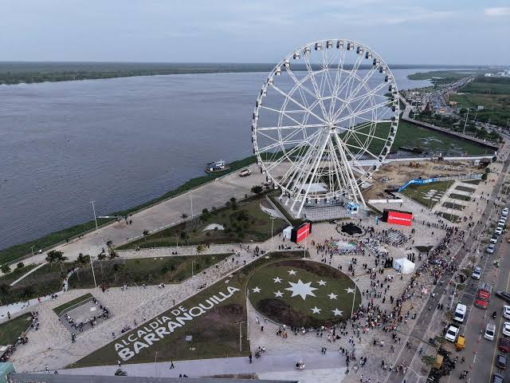
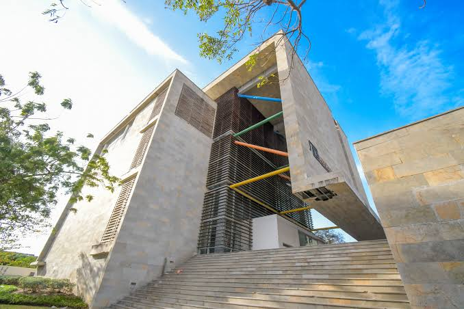

LUGARES TURÍTICOS
Gran Malecón |
El Gran Malecón es uno de los espacios turísticos más conocidos de la ciudad. Está ubicado junto al río Magdalena y cuenta con zonas para caminar, restaurantes, espacios recreativos y lugares para disfrutar del paisaje. |
 |
Ventana al Mundo |
La Ventana al Mundo es una estructura colorida que se convirtió en uno de los símbolos modernos de Barranquilla. Es un lugar muy visitado para tomar fotografías y conocer parte de la identidad visual de la ciudad. |  |
Museo del caribe |
El Museo del Caribe fue un espacio dedicado a la cultura y la historia de la región Caribe colombiana. Puede mencionarse en la página como parte del patrimonio cultural y turístico de la ciudad, teniendo en cuenta que actualmente su situación y funcionamiento pueden variar. |
 |